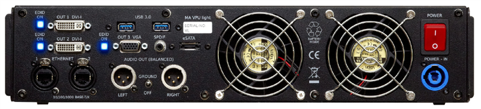

Quickstart Connect VPU light

- 2x DVI OUT and 1x VGA OUT
- 2x Ethernet (for connecting MA-consoles, grandMA onPC ....)
- 2x 3.0 USB e.g. mouse, keyboard, storage device + 2 x USB 2.0 at the front panel
- SPDIF Digital audio output
- Audio OUT (balanced) Left/Right Ground On/Off
- eSATA port for connecting extern drive. Use only cable with max length 0,5 m! Do not disconnect drive when at work!
- Mains switch ON / OFF (In standby mode – switch on “I”, the AC power voltage is present within the instrument, even if the apparatus switched off by the push button on the front)
- Mains Input (blue) 120 / 230 V, 50/60 Hz no switching of voltage necessary (Cable and connector not included ex works)